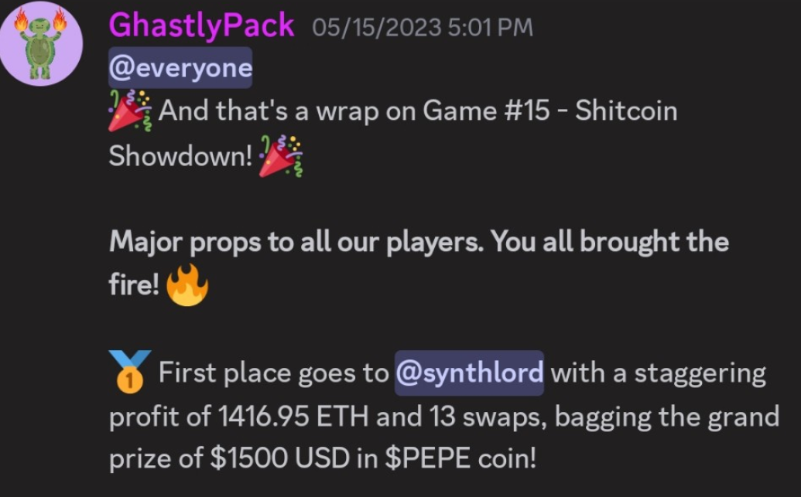
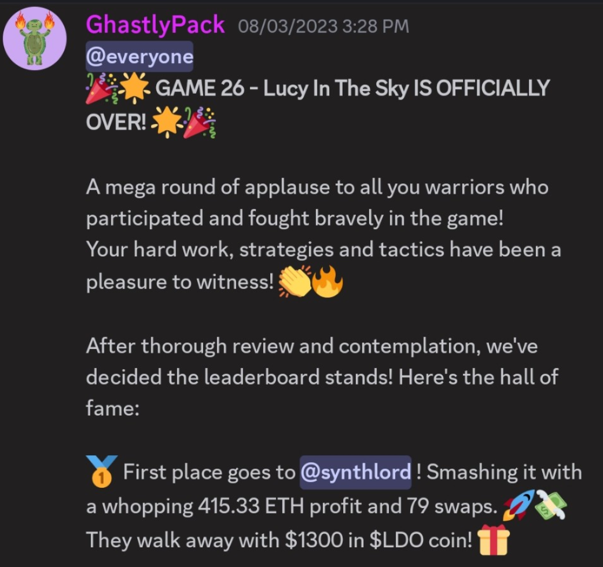
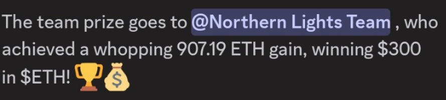

I Earned Over $5,000 in YatFantasy: The Wild Ride of Trading Fantasy NFTs
Have you ever felt trapped on an emotional rollercoaster? That’s exactly what it was like competing in YatFantasy, one of the most thrilling and fiercely contested trading competitions I’ve ever experienced. From its beginning in 2023 to its conclusion in 2024, this game challenged me to my utmost, not just as a competitive player but also as someone who had to deal with a lot of unpredictability. YatFantasy was a place where teams and individual players could show off their analytical skills, strategies, and, most importantly, their ability to stay calm under pressure. But what made this competition truly unique?
What Was YatFantasy About?
For those who didn’t experience it, YatFantasy was a fantasy trading competition based on NFTs on the Ethereum network. Each of the players had been issued 100 ETH; after a week, those with the highest number in their balance would win. The winner earned $1500, second won $500, third got $250 and the winning team a bonus of 300. the end It wasn’t just about buying and selling NFTs; you had to keep an eye on prices, collections, and the market 24/7.
The Team Battle: Constant Strategy and Tension
My final weeks in YatFantasy were a real duel between two teams. It was an intense competition where every move mattered. I literally had to stay glued to the screen at all times, monitoring how NFT collection prices fluctuated. Sometimes, in the middle of the day or late at night, I found myself making key moves because collection prices could change at any second.
I remember the adrenaline of making quick decisions: selling a collection because the floor price was rising or spotting an undervalued NFT that later skyrocketed in value. Even though the competition relied on the real-time NFT market, there was a crucial difference between the game and real life. In YatFantasy, you earned points if the floor price went up, even if no sales occurred. That’s something you don’t see in the real market, where liquidity is essential.
What I Learned from the Game: NFT Volatility and Constant Effort
One of the most important lessons I took from YatFantasy is how unpredictable and volatile the NFT market can be. Every decision required analysis and a lot of effort. And although I consider myself a competitive person, this game taught me that it’s not just about having good instincts. You have to be ready to move fast, adapt, and, most importantly, learn from every mistake.
Competing in YatFantasy was an exhausting yet incredibly rewarding experience. I can’t deny that the effort was immense, but it was worth it every time I saw my decisions reflected in my virtual earnings. However, YatFantasy also taught me that the strategy in this game can’t be directly applied to the real market. The way prices rise in the game, sometimes without any sales, is something that just doesn’t happen outside this environment.
The End of YatFantasy and the Future of Trading
Unfortunately, like all good things, YatFantasy came to an end in mid-2024. I lived each of those last competition days with the same excitement as the first. And although it no longer exists, I believe many of us who participated took away great lessons and memorable moments.
Today, the market has changed, and where NFTs once ruled the scene, memecoins have now taken their place. Each cycle has its trend, and the volatility is still there, only in the form of different assets. What’s clear is that whether in YatFantasy or the real world, trading remains a game of high competition and strategy.
Conclusion
YatFantasy was more than just a fantasy trading competition; it was an experience that tested my skills and my ability to stay steady in a volatile market. Though it’s no longer with us, its legacy and the lessons it left behind continue to resonate, and those of us who played know that effort and strategy will always be key to succeeding, whether in the game or in life.
Frequently Asked Questions
1. Was YatFantasy similar to the real NFT market?
-
Not exactly. Although it used real-time prices, the point system worked differently, allowing you to rise in the rankings without needing real sales.
2. How were teams formed in YatFantasy?
-
You could join a team or play individually. Both modes offered a different experience, but team rewards always added an extra layer of strategy.
3. What happened if you lost your 100 virtual ETH?
-
If you ran out of virtual ETH, you simply couldn’t make any more moves until the end of the week. That’s why risk management was key.
4. How much did luck influence YatFantasy?
-
Although strategy was crucial, the volatility of the NFT market added an element of luck. Knowing when to act quickly was key to avoiding major losses.
5. What replaced YatFantasy in terms of competitive trading?
-
In this new cycle, memecoins have replaced NFTs as the most volatile and popular asset for trading. Trends change, but the excitement of trading remains the same.